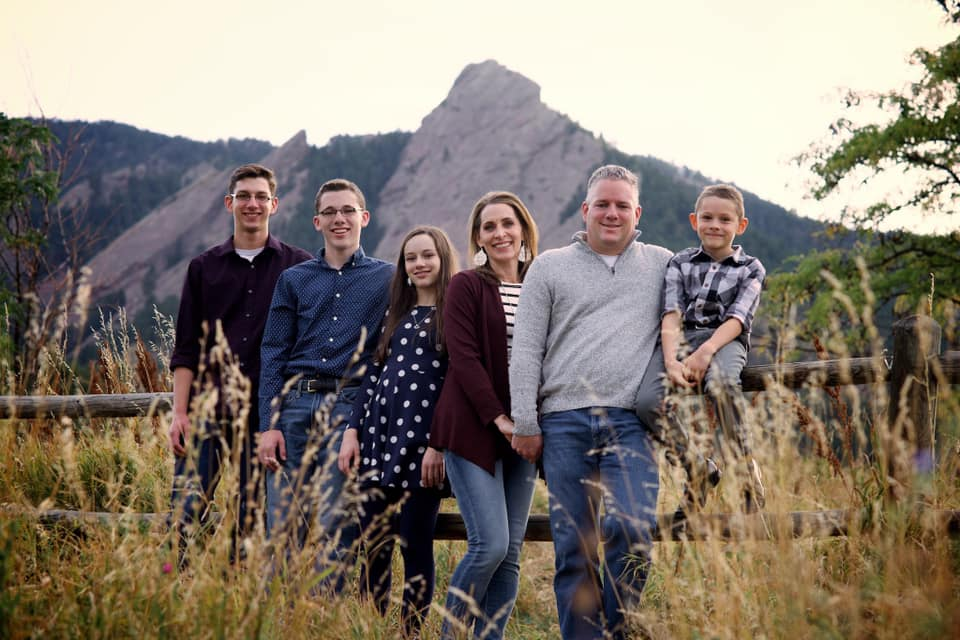

I am the oldest of four children. My parents raised me, my brothers, and my sister in Denver, CO. All four of us were homeschooled for the majority of our education.
Although we each have unique personalities, we are drawn together by our love for music, our sense of humor, and our commitment to the gospel of Jesus Christ.
I love to play the piano! I play mostly classical music, and my favorite composers are Sergei Rachmaninoff, Frederic Chopin, and Maurice Ravel. I also love to write my own music, and I have dabbled in audio production. The video below shows my performance of the Finale from Chopin's Sonata in B minor at the BYU Musicians' Summer Festival in 2018.
907-555-2001
thatonestudent@is201.net
820 Straight and Narrow Path
Zarahemla, USA